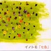

strange music page
* * * 2003.5
-2003.5.28 風邪ひいた

#えーと風邪ひいて熱だしました、会社休んでます。寝すぎて寝れないのでちょっとだけ更新。
・最近はこないだ買ったイノトモの新譜ばっかり聴いてます。
・清水一登さんの出る6/13新宿ロフト+1の情報が入ってきたんで後で書いておきます。
・日曜日は思いもしない所で、思いもよらない人に偶然遭遇してビックリ。その後2,3時間ビックリマークが付きっぱなしみたいな感じ。
・あと、土曜日に行ってきたささのみちる,ほとらぴからっ@吉祥寺MANDALA-2の事をちょっとだけ。
・プロバイダをADSL@DIONに変えたらここのページをどうしようか考え中、サイトの維持の為にzeroに金払うのも嫌だけど、カスタムCGI使えないDIONのスペースにこのサイト置くのもちょっと。
♪イノトモ/風
-2003.5.24 そーいえばふと思ったんだけど、
#似てない？
♪REAL FISH/tenan
-2003.5.23 ザビヌル
#渋谷タワレコで東京ザヴィヌルバッハのインストアライヴを見てきました。
ついでに山本精一のソロアルバムを買おうと思ってタワレコ６階に行ったら、ルインズ波止場の新譜が出てたんでそっちを買っちゃいました。
帰りにウツボカズラさんと故買屋さんとで大戸屋で飯。そいえば弟も来てたな。
♪Weather Report/Mr.Gone
-2003.5.20 すみません
#トップページの（見たい）ライヴスケジュール、間違えまくてってたみたいです。東京ザヴィヌルバッハの渋谷タワレコでのインストアイベントは金曜日です。ほんとすんません。
書いておきながら今日のMOSTは行けず、気付いたらチケット無くなってて、やっぱり当日券出なかっただけなんだけど。
「ダメライフだな～」とか思ってると、「そう思うんなら何とかしろ」とか言う内なる声が聞こえてきて、さらに「んなこと、サイトに書くな」というツッコミが前頭葉から。
♪soft machine/facelift
-2003.5.18 なんかもー
#えーと昨日の晩は弟なんかが来てて、うちで大量のCDを漁っていったと共にCDを何枚か貸してもらいました。（この下のリスト全部弟の持ち物ですので）
- ISO/ISO LIVE (1999)
- ISO/ISO (1999)
- Filament/Filament-2 (1999)
- 大友良英 & Sachiko M with DJ Mao & peter Skala/Warhol Memory Disorder (2003)
- 大友良英さんの最近の作品、ISOとかFilamentとかって勝手に「似たような音」とか思ってたけど、一枚一枚結構違うものなんだなと。きちんと全部聴くのには体力がいりそう、Filament-2の4曲目の右後ろからかすかに聴こえるようなサイン波が好き。
- Hecker/SUN PANDAMONIUM (2003)
- 気狂いそうな、電子ノイズ。サイン波の周波数上がったり下がったり揺れたり交錯したり。インダストアルっぽい雰囲気も。
- Jim O'Rourke/DISENGAGE
- 1991年録音の再発モノみたい。自然音を交えた実験音楽風だけど、結構聴けます。
- MERCK MIX 1 SPRING 2003 (2003)
- エレクトロニカのフロア用馬鹿トランスミックス、♪ツッチーツッチーピーピキピキ。みたいな。こーゆーのはみんな正気じゃない所で。
などなど・・・電子音楽ばかりで頭痛くなってきた。大体一度に5枚以上のCD聴くとごっちゃになって、訳わかんなくなってくる。
あと、いい加減ISDN環境に耐えられなくなってきて、ADSLを申しこんでみました。データの管理も面倒になってきたんで、いっそのことフルPHP+MySQLにしちゃおうかと画策中。そのうちね。
ちなみにVincent Atomicus@新宿PIT-INNは行かず。行きたかったんだけどなんかちょっと時間がなくて（金も無いが）・・・でも行ける時間が有ったら、イノトモ@渋谷BYGに行ってたかも。なんて書くと怒られるかな。
Filament/Filament-2
-2003.5.10 実家でCDを聴く
#か・な・り久々に実家に飯を食いに行ってきました。たまに帰ると大量の余った御飯が出てくる→食い過ぎ。
そいで、弟から面白そーなCDを聴かしてもらうの巻。
- 大友良英/Ensemble Cathode (2002)
- 「Anode」が個人的にダメだったんで聴いて無かったんですけど…コレはどちらかというと「Cathode」依りの作品で結構気に入りました。ていうかコレ今までの大友作品の中でもかなり好み。んなこと言っても大友良英知らない人には何だか分からないですよね。www.japanimprov.comで大友さんのライナー読めますので、そちらへ。
- ヒデノブイトウ/first love (2003)
- cornelius/zappa/bossa nova/rei harakami・・・て感じかな、イイです。聴いてる途中でEGG(カンタベリー、Dave Stewartのいたバンド)の曲がそのまんまサンプリングされてて笑ったけど。7月にオパビニアと一緒にやるってのも納得するよな音。
flyrec.comで試聴できます。
- REFUSE 73/ONE WORD EXTINGUISHER (2003)
- エレクトロ・ヒップホップっちゅーのかなぁ？スコット・ヘレンの別名義。Beastie BoysのバックトラックをAphex Twinがやってるよーな感じって言ったら言い過ぎかな？FUJI ROCK FESTIVALにも出るんですねー。WARPからのリリース。
- CEX/Tall,Dark and Handcuffed (2002)
- これもヒップホップ…なんだかまともなヒップホップ過ぎてちょっと自分にはしんどいかな？昔なんか他のCEXのヤツ聴いた時はもーちょい無茶苦茶で面白かったんだけど。TIGERBEAT6て所からのリリース。
なんか弟にImprovised Music from JapanのCDショップページを教えてあげたら馬鹿みたいに沢山買ってました（ISOとかFilamentとか）。届く頃を見計らってまた行ってみようと思う。
♪ヒデノブイトウ/Cyborg dance
-2003.5.4 野沢菜を食べに野沢温泉
#野沢温泉の外湯に入って
野沢菜入りおやきを食べて
そば食べて
関越渋滞して
環八も渋滞して
いー天気でサイコーでした。
|
|
♪空気公団/旅をしませんか
-2003.5.3 opabinia (after)
#で、行ってきました。いやその清水万歳っつーかその。くわしくはこっちか清水サイトの方(レポ内容は一緒・・・)に上げときます。
♪opabinia/最低人
-2003.5.3 opabinia (before)
#ちょっとトップの配置を変えてみました。ライヴ情報が下に伸びすぎて間抜けな感じになったので。フォント小さいと見にくいかな。
えーと色々行きたいライヴ情報が入ってきまして、
オパビニアの7/11と清水一登ソロの6/13ってのはこっち見てみて
んで、TAKEさんとこで見かけたんですけど、7/19に佳村萌+鬼怒無月+勝井祐二ってのが有って。前に下北沢LADY JANEで見たんですけど、死ぬほど良かったので。また演ってくれて幸せ。
あと（佳村萌さんの追っかけみてーだなぁ）、6/3は吉祥寺STAR PINE'S CAFEにて演劇の音楽のイベントみたいです。
ほとらぴからっ(佳村萌+張紅陽+浦山秀彦+whacho)と美尾ストリングス(美尾洋乃+美尾洋香,ゲストに福原まり+ISSAY)とOKIDOKI(多田葉子+鬼頭哲+臼井康浩)とくものすカルテットっていう自分好みの組み合わせのライヴ。
とりあえず5/24のささのみちる&3億円(ホッピーとかwhachoとかもいるみたい)のゲストでも「ほとらぴからっ」は出るようです。
そんなわけで、今から吉祥寺MANDALA-2のオパビニアのライヴへ。
♪opabinia/(slight)googli-moogli